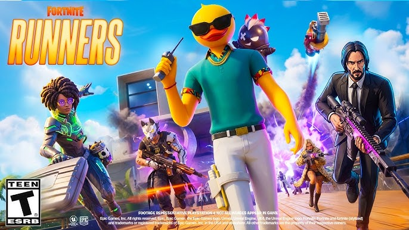

About Me
Hi my name is Luke Dickerson also known as NormalCrayon in Fortnite. I want to share a little information about myself and why I decided to make this website about Fortnite. I have played Fortnite since Chapter 1 Season 3 though a took a break after Chapter 1 Season 5 and did not return till Chapter 4 Season 2. Upon my return back I played the game off and on though it was not until Chapter 6 Season 4 that I realized I could climb the ranks to play competitively in zero build. With this I have now finished in the top rank Unreal in zero build for the past three seasons with my highest seasonal finish being #4138 in the World during The Simpsons mini season.
Goal of the Guides
The goal of this website is to reach zero build players in Fortnite Runners the new season to help them become better players. I want this to not only benefit those who are already highly competitive at the game, but I also hope to provide valuable information to those who just want to win more public matches with their friends. There are many different strategies and ways to get wins, so I hope these guides provide players with valuable information to help them get more wins and improve at the game.
I plan to build multiple different sections on this website by talking about different strategies and giving tips on how to win more games in Fortnite. I plan to do this by breaking down the seasonal meta and best places to land. Within each of these categories I will give in depth analysis on multiple areas by breaking down how different weapons and locations benefits different playstyles. Also, I will cover different rotation strategy's and how to best play the early, mid, and late game of a match.